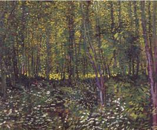

Listen to 'Midday in the wood' in English

MIDI EN FORET
Le ciel fume, l'air flambe et la route est de braise.
Par les prés ocellés où halète un frisson
Des bufs blancs, blocs de paix, de mouches et de glaise
Mélangent leur torpeur au sommeil des buissons.
Un parfum de pin chaud flotte parmi les branches.
Un feu sans flamme brûle et vibre aux frênes roux.
Les fûts pétrifiés saignent leur sève blanche.
Un gouffre sans abîme aspire leurs remous. (*)
Le sentier obscurci cadre l'azur avide.
Une danse étincelle aux sous-bois anxieux.
Quand l'oreille surprend le chant du grand bois vide
L'âme connaît soudain l'horreur fauve des dieux.
7 mai 1960
Michel Galiana (c) 1992
MIDDAY IN THE WOOD
The sky fumes, the air flames and the road is aglow.
On the speckled meadows, gasping for breeze and breath,
White oxen, blocks of peace and flies and clay borrow
Their drowsiness from the slumber of bush and heath.
A fragrance of hot pines hovers amid the boughs
And a flameless fire glows and thrills through red ashes.
Turned to stones, the trunks ooze their white sap and arouse,
Up the abyss which soaks them up, trembling eddies. (*)
The darkened sullen path frames the greedy blue sky,
While a sparkling dance scares the undergrowth below.
When your ear overhears the empty forest's sigh,
Of gods of old your soul suddenly stands in awe.
7 May 1960
Transl. Christian Souchon 01.08.2006 (c) (r) All rights reserved
Listen to 'Midday in the wood' in English